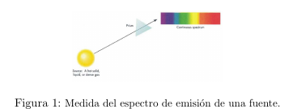
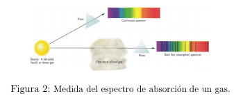
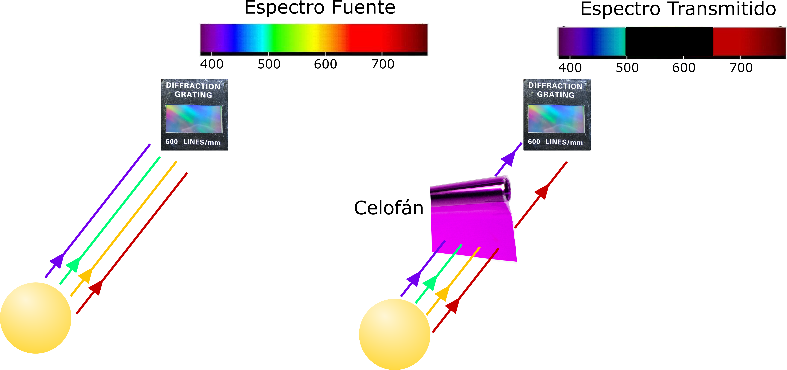

EXPERIENCIA CASERA 1
Contenido
EXPERIENCIA CASERA 1¶
Construcción de un espectrómetro. Espectros de fuentes y transmitancia¶
Esta experiencia se puede programar para ser realizada en directo en un clase o se puede organizar como un trabajo individual o en grupo para realizar fuera del aula.
Introducción¶
La teoría electromagnética clásica establece que las cargas aceleradas emiten radiación. Así, la carga oscilante en una antena de radio emite ondas de varios metros de longitud de onda. Los cuerpos calientes también emiten radiación. Así, si calentamos un hierro a una temperatura de 1000ºC, podemos verlo al rojo vivo o amarillo y si subimos la temperatura aparecerá pálido, indicando que emite radiación de diferente frecuencia e intensidad. El filamento caliente de una bombilla produce luz de esta manera.
Para explicar la radiación emitida por los átomos, en 1913 el físico danés Niels Bohr introdujo un modelo cuántico del átomo en el que los electrones ocupan unas configuraciones estables. Esto daba lugar a una serie discreta de niveles energéticos y por tanto a la emisión de radiación con longitudes de onda relacionadas con dichos niveles de energía. Así Bohr obtuvo una fórmula general que predecía las longitudes de onda de la radiación emitida por el átomo de hidrógeno. Para observar el espectro de la radiación emitida por diferentes fuentes de luz se hace pasar la radiación a través de un elemento óptico dispersor, por ejemplo un prisma o una red de difracción, que separe espacialmente las distintas longitudes de onda. Se obtiene así su espectro tal y como se muestra en la Figura 1. Esta emisión se produce al excitar el material de alguna manera, calentándolo o produciendo sobre él una descarga eléctrica.
Las fuentes de luz pueden ser empleadas para obtener información sobre la absorción de otros medios materiales. Si hacemos pasar la radiación de una fuente a través de una nube de un cierto gas, y luego a través del prisma, el espectro obtenido es diferente al de la fuente, siendo estos cambios provocados por el gas. Comparando ambos espectros se obtiene el espectro de absorción del gas que nos dice las radiaciones que han sido absorbidas por los átomos o moléculas del gas y por tanto han desaparecido.
Construcción del espectrómetro¶
El espectrómetro casero que vamos a construir es una iniciativa llevada a cabo por Public Lab que es una asociación sin ánimo de lucro dedicada a la divulgación de la ciencia. La información de su proyecto Papercraft Spectrometer Intro Kit se encuentra en https://publiclab.org/wiki/papercraft-spectrometer
Necesitaremos los siguientes materiales:
cartulina negra o papel grueso de color oscuro para construir el espectrómetro
plantilla recortable proporcionada en la web: https://publiclab.org/wiki/papercraft-spectrometer
tijeras, cúter
pegamento, celo
DVD-R que juega el papel de elemento dispersor que separa los colores (red de difracción o prisma)
Las instrucciones del montaje aparecen en la página web anterior. A continuación mostramos un video resumen.
Espectros de emisión de fuentes de luz¶
Para observar el espectro de la radiación emitida por diferentes fuentes de luz la radiación debe pasar por un elemento óptico dispersor, por ejemplo un prisma o una red de difracción, que separe espacialmente las distintas longitudes de onda o colores. Así se obtiene su espectro tal y como se muestra en la figura. Esta emisión se produce al excitar el material de alguna manera, calentándolo o produciendo una descarga eléctrica sobre el material.
{kind=link}
Emplearemos el espectrómetro casero para analizar la composición espectral de distintas fuentes de luz, es decir, qué colores o longitudes de onda contiene la fuente. En el siguiente vídeo se muestran varios ejemplos.
Espectro de absorción del papel celofán¶
Se analiza espectralmente la absorción de un trozo de papel celofán transparente coloreado. Para ello la radiación de una fuente de luz blanca se hace pasar a través del trozo de celofán y luego a través del elemento dispersor (red de difracción). Este espectro será diferente al de la fuente de luz, siendo estos cambios provocados por el papel celofán (ver la siguiente figura). Comparando ambos espectros se obtiene el espectro de absorción del celofán que nos dice las radiaciones que han sido absorbidas.

La transmitancia (usualmente denominada $T$) es la razón entre la intensidad transmitida por el celofán coloreado y la intensidad incidente (intensidad de la fuente de luz). Esta magnitud nos indica la proporción de luz que transmite el material para cada longitud de onda.
$$ T = \frac{I_{transmitida}}{I_{incidente}}$$
En el siguiente vídeo se muestra cómo medir el espectro de transmisión del papel celofán transparente coloreado con el espectrómetro casero.